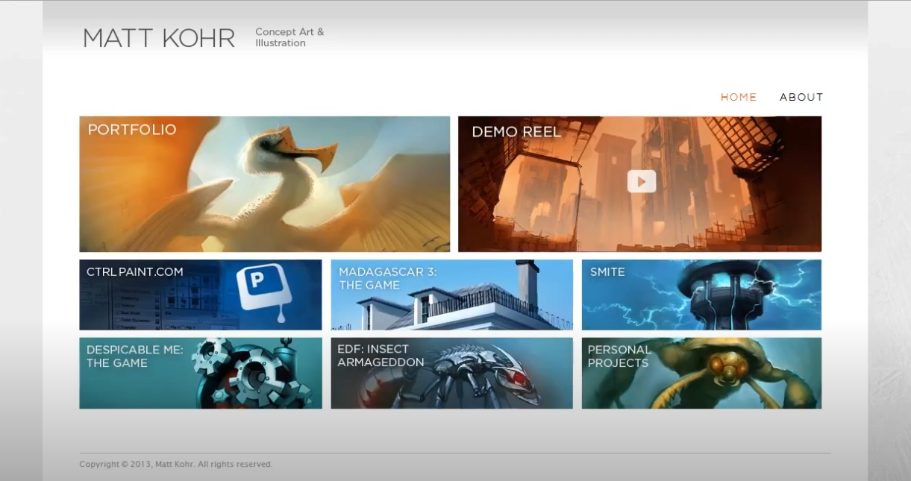
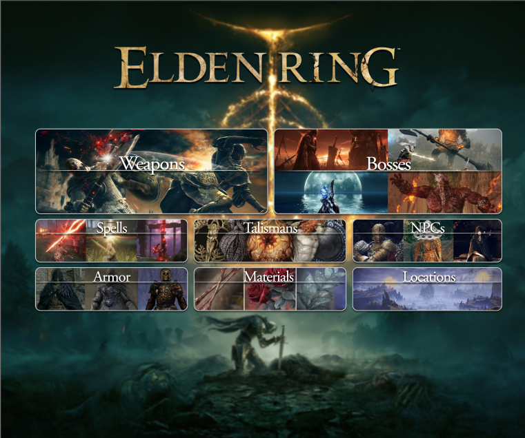
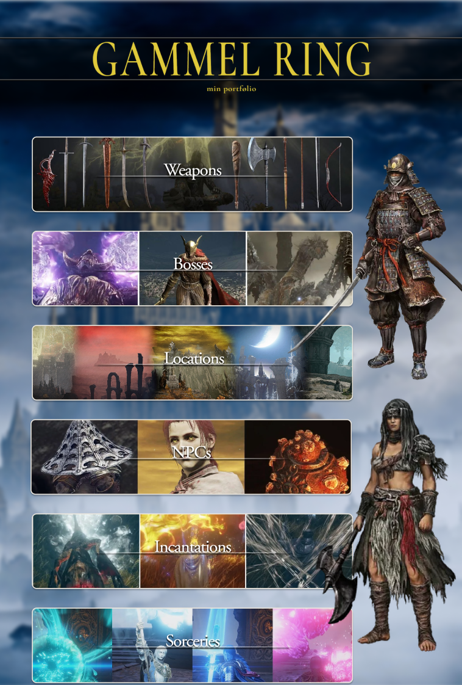
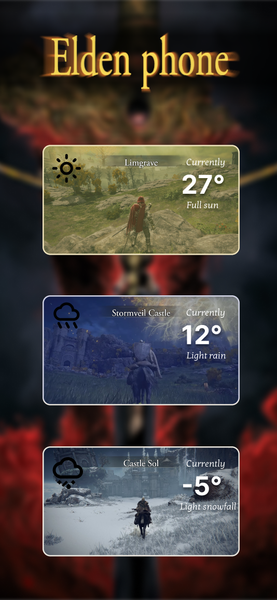

Mit første design er inspireret af videoen vi fik til opgaven omkring visual hierarchy.
Til denne opgave skulle vi bygge en portfolio-style website omkring ens interesser, som f.eks. en hobby eller et spil. Derudover skulle vi også lave 3 forskellige versioner af portfolioen. Jeg valgte at bygge min portfolio omkring spillet Elden Ring.
Herefter opbyggede jeg mit første design med forskellige kategorier indenfor Elden Ring.
I mit design har jeg valgt at have de to vigtigste kategorier først og større end resten. For at fremhæve knapperne har jeg givet dem noget drop shadow og sløret baggrunden en smule.
Til det næste design har jeg valgt at have knapperne lodret.
Her er indholdet meget det samme. Jeg har valgt nogle nye billeder og ændret to af kategorierne. Derudover har jeg stillet to figurer fra spillet langs siden.
Til det sidste design har jeg valgt et helt nyt layout, som er inspireret af en telefon vejr app.
Jeg har brugt forskellige billeder fra spillet, med et farve overlay for at fremhæve vejret (f.eks. gul ved det første billede). Derudover har jeg brugt et SVG billede til at hurtigt indikere hvordan vejret ser ud. Jeg har igen sløret baggrunden og givet hver "knap" drop shadow for at fremhæve forgrunden.